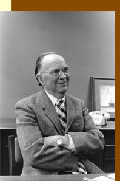

 |
|||
| . |
|
||

© 2021 Festival Art and Books. All rights reserved.
Tolkien at work: A helping hand on The SilmarillionClyde S. Kilby
Clyde S. Kilby (1902–1986) was one of the earliest literary scholars teaching and writing on J. R.R. Tolkien and C.S. Lewis. He was a Professor in the English Department of Wheaton College, in a quiet suburban town near Chicago. By the mid 1940s, when C.S. Lewis started to become internationally known for writings such as The Screwtape Letters, Kilby began to take a scholarly interest in him, and met him in Oxford in the early fifties. He hence gradually became aware of Tolkien’s distinctive work, then relatively unknown. He worked with J.R.R. Tolkien one summer after Lewis’s death on the unfinished The Silmarillion, and recorded his experiences. His account is long out of print, but Festival in the Shire Journal has obtained an extract, which follows. Dr Kilby was founder and curator for many years of the Marion E. Wade Collection of materials associated with Tolkien, his close friend C. S. Lewis and other Inklings, which has done much to establish scholarship on these writers. He knew many of the Inklings, the circle of literary friends to which Tolkien and Lewis belonged, and arranged valuable interviews after their deaths with members and associates as part of the Wade’s oral history holdings. To learn more about the Wade Center, based in Wheaton, Illinois, USA, visit www.wheaton.edu/wadecenter For more on Professor Kilby visit http://en.wikipedia.org/wiki/Clyde_S._Kilby
I first met J.R.R. Tolkien late on the afternoon of September 1, 1964. His fame was then rapidly on the rise and he had been forced to escape his public whenever he could. Visitors were more or less constantly at his door and his telephone busy. Phone callers from the United States sometimes forgot the time differential and would get him out of bed at two or three o’clock in the morning. He was paying the price of his sudden emergence from the relative obscurity of a professional scholar to the glare of publicity accorded to any internationally known writer.
First meeting
With great hopes and some fears I walked to 76 Sandfield Road, opened the gate, nervously approached his door and rang the bell. I waited what seemed to me a very long time and was on the point of a reluctant departure when the door opened and there stood the man himself.
After his sober greeting at the door, I found him immediately friendly as we sat down. Tolkien was a most genial man with a steady twinkle in his eyes and a great curiosity—the sort of person one instinctively likes. The main reason which was forcing him to shut out visitors was not his antipathy to them but rather the knowledge that his natural friendliness and love of talking with almost anybody who happened along would seduce him into spending time with visitors while his work languished. I briefly explained who I was and told him that, like thousands of others, I had come to love his great story and regard it as something of a classic. He laughed at the idea of being a classical author while still alive, but I think he was pleased. He then became a bit apologetic and explained that people sometimes regarded him as a man living in a dream world. This was wholly untrue, he insisted, and described himself as a busy philologist and an ordinary citizen interested in everyday things like anybody else.
He talked of The Silmarillion, commenting that his main trouble with it was the lack of a commanding theme to bring the parts together. He was much aware that he needed to complete the story and spoke of his hope to publish it by 1966. He recounted some of the plot, especially its beginning. At that time I had no idea I should later read the story in manuscript.
Invited back
To my surprise, at the end of our brief visit, Tolkien warmly invited me back for the morning of September 4, the day before I was to fly home to the U.S. At that time Mrs. Tolkien greeted me at the door and showed me upstairs to her husband’s main office, a room crowded with a large desk, a rotating bookcase, wall bookcases, and a cot. I was received like a longtime friend.
I was by no means unhappy to find him doing nearly all the talking. It was a pleasure to listen as he went easily from one topic to another. Tolkien, himself a Catholic, told anti-Catholic anecdotes with a glow of humor and an utter lack of antagonism. One story was of [his friend C.S.] Lewis’s Anglican childhood in North Ireland where he had been told that the wiggletails in a well at his home were wee Popes. Such stories, I later found, did not mean that Tolkien had a casual view of his religion.
He told me that he was fourteen years writing The Lord of the Rings, also that he had typed all of it himself, with many changes, by the three-fingers method, in the very room we were in. I asked him how The Hobbit was related to The Lord of the Rings and whether he had gotten the idea of the latter while doing the former. He promptly insisted this was not the case. The stories originated, he said, in orbits of their own and neither was necessarily the consequence of the other.
As I prepared to leave, he spoke of getting a letter from a man in London whose name was Sam Gamgee. I asked him what reply he had made and he said he had written that what he really dreaded was getting a communication from S. Gollum. He gave me an autographed copy of Tree and Leaf.
Summer with Tolkien, 1966
When I left Tolkien’s home in 1964 I had no idea of ever returning. We carried on a little correspondence. One item concerned a plan developed late in 1964 to establish at Wheaton College a collection, or set of collections, including his works and those of C. S. Lewis, Charles Williams, Dorothy Sayers, G. K. Chesterton, George MacDonald and Owen Barfield. I wrote him that we planned to bring together “everything you have written and everything written about you, both in books and periodicals”.
Then in the latter part of 1965 I wrote him that, like many others, I was eager to see The Silmarillion published and would therefore come to Oxford during the summer of 1966, if he wished, to assist him with his correspondence or in any other manner that might facilitate the publication of his story of the First Age of Middle-earth. On Christmas Eve I found a letter in my mail [in which he took me up on my offer].
I began at once to prepare to render him the best service I could. I brushed up on mythology in general and the mythologies of northern Europe in particular. I once again, and now more carefully than ever, read The Lord of the Rings looking particularly for allusions to the First and Second Ages of Middle-earth. I assembled this material and gave attention to its chronology and geography.
I went up to Oxford and settled in at Pusey House. Then I telephoned the Tolkiens that I was at their service. I was warmly welcomed into the Professor’s upstairs quarter, I found the place no less crowded than two years earlier. He was in process of revising The Two Towers. He began our new association by showing me boxes of manuscripts— poetic, scholarly, creative. As Time went on I discovered him a Barliman Butterbur, looking here and there for portion[s] of The Silmarillion. Having had some experience in setting up filing systems, I finally offered to put his papers in order, a proposal he quickly rejected on the ground that then he should never find anything.
I was immediately aware that he had much unpublished writing. For instance, he was an expert on The Ancrene Riwle, that little book from the thirteenth century offering guidance to three women who had purposed to become nuns. He often mentioned this work and others from its time. He was also an expert in the Middle English period and once told me that he never opened a book written then without finding new things in it. He had serious thoughts of doing a translation of the Anglo-Saxon epic Beowulf but felt the task would be difficult because the poem was so concentrated. Coming over to me, he illustrated his concern by putting his torso almost against mine and, pulling back his fist, insisted that the reader must feel the very sword-thrust into the dragon. He said he had written parts of a bestiary, some bits of which had gone into Tom Bombadil. But I was aware also of numerous unmentioned manuscripts. One can imagine the perplexity of a writer with so many ideas and so many incomplete or unperfected writings on hand and with the realization of so little time left. He was then seventy-four.
Two things immediately impressed me. One was that The Silmarillion would never be completed. The other was the size of my own task. How could I in a few weeks read, analyze and give a critical judgment on such a mammoth literary effort? Actually I spent one entire day on a six-page section of the manuscript.
Impressions of Tolkien
One of my friends had been told by C. S. Lewis that one might ask Tolkien questions but one would not necessarily get the answers expected. One might find him talking on an entirely different topic, to which he had seen a relationship lost to the questioner. I soon found this to be true. Discovering that efforts to discuss portions of the manuscript with him would not succeed, I began to write out my comments and simply attach them to the manuscript.
We met generally in his upstairs room but sometimes in the garage office. When the weather was warm, we might go out into the garden. On our first visit there he took me round the garden and gave me the personal history of nearly every plant, and even the grass. He said he had loved trees since childhood and pointed out the trees he had himself planted. One easily understands Michael Tolkien’s remark that from his father he “inherited an almost obsessive love of trees” and considered the massing felling of trees “the wanton murder of living beings for very shoddy ends”. Tolkien wrote a letter to the editor of the London Sunday Telegraph taking exception to what he thought an unfair allusion to his attitude toward trees. “In all my works,” he wrote, “I take the part of trees as against all their enemies” and he spoke of “the destruction, torture and murder of trees perpetrated by private individuals and minor official bodies. The savage sound of the electric saw is never silent wherever trees are still found growing.”
It would be satisfying to record that I always found him busy at his writing, but that is not true. I did find him sometimes working at his Elvish languages, an activity which seemed endlessly interesting to him. I think he did a good deal of reading of detective stories and science-fiction. He told me more than once of his pride in being chosen a member of a science-fiction writers’ association in the United States. When I was with him he once began to read me a passage in Elvish, then stopped, came up close and placing the manuscript before me said that Elvish ought not to be read but sung and then chanted it in a slow and lovely intonation.
POSTSCRIPT. Looking back at my summer with Professor Tolkien, I remember more vividly than anything else his invariable practice of coming downstairs and out to the front gate with me and always with expressions of warmest appreciation. He said that he had wanted an “outsider” to examine The Silmarillion, and though he had confessed his own lack of confidence in it, he showed great gratitude for what he described as a renewed interest in completing the story. The correspondence [between us after I returned home] unhappily suggests that apparently he did little or nothing about it. Let us all hope I am mightily wrong.
The Silmarillion appeared in 1977, after Tolkien’s death, substantially edited and compiled by Christopher Tolkien, aided by writer Guy Kay. Clyde Kilby wrote a chapter describing The Silmarillion as he found it that summer of 1966, but at the request of Christopher Tolkien, to whom he sent his manuscript for comment, left it out of his Tolkien & The Silmarillion. That chapter eventually was published in the journal Seven: An Anglo-American Review, Volume 19, 2002, pp. 91–104. (See http://www.wheaton.edu/wadecenter/seven/BrochureBackIssues17-25_web.pdf.) It gives a fascinating snapshot of The Silmarillion as understood by Professor Kilby in the light of his brief but far from superficial collaboration with Tolkien. The abridged extract above from Tolkien & The Silmarillion is reproduced by kind permission of the copyright holder, The Wade Center, © The Marion E. Wade Center, Wheaton College, Illinois, USA, 2003, and may not be further reproduced without written permission of The Marion E. Wade Center. Abridgment by the Festival in the Shire Journal.